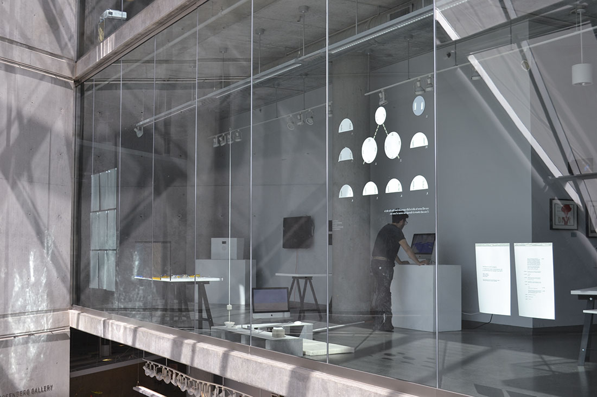
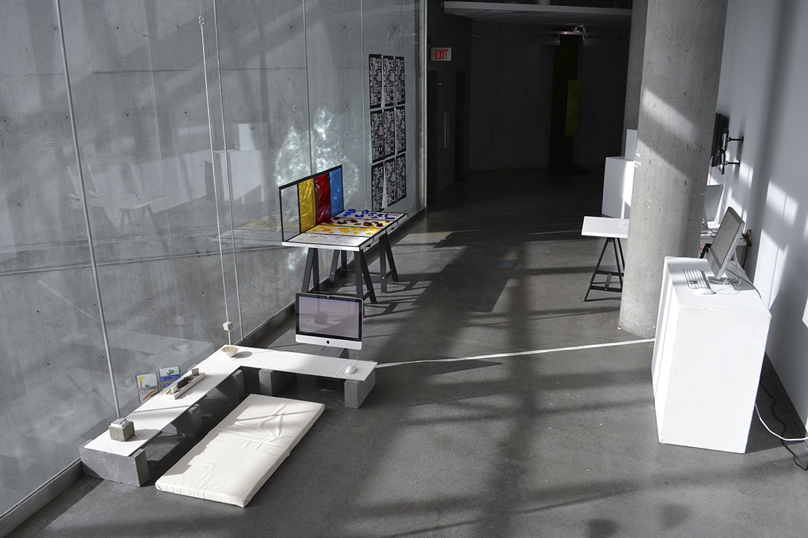
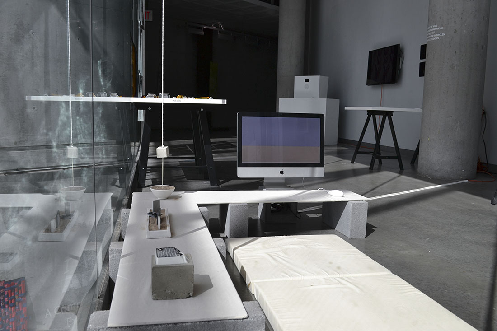
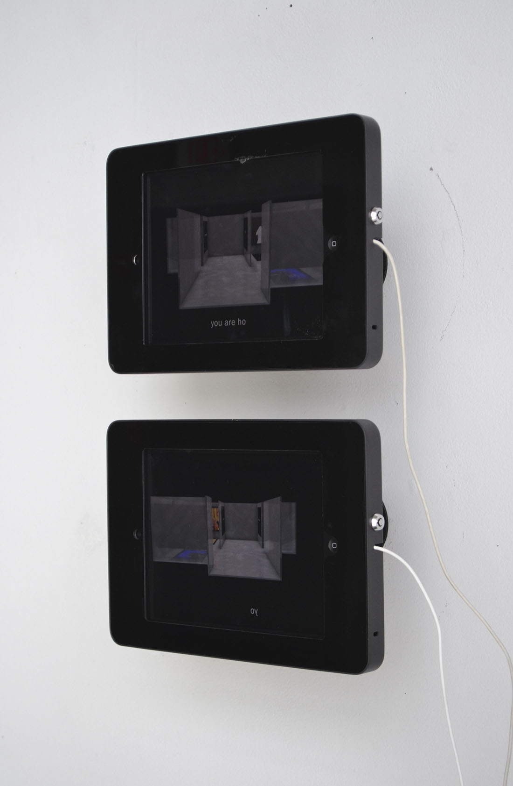
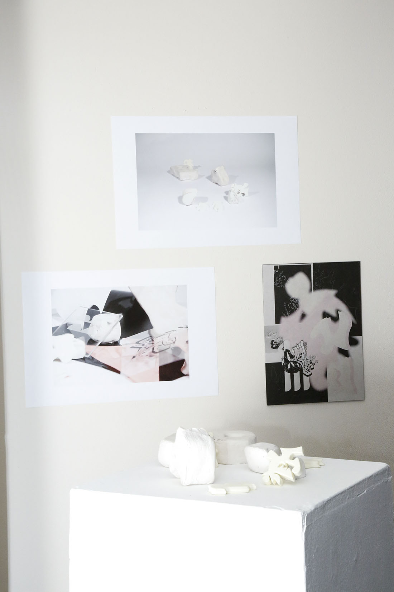

Curation / Research Initiatives
2015-2016
1. Overview of a Work in Progress, Part 1
2015.04.12
Overview of a Work in Progress was a group project I initiated in the winter/spring of 2015 to develop and experiment with the idea of an evolving, collective based, research practice. Weekly meetings were held to both share research material and refocus group discussions that eventually led to the completion of two small bodies of work. Documentation by Michael Auer.
Collaborators:
Michael Auer, Jake Buhler, Lily Clark, Nick Fogarty,
May Kim, Connor Muething, Mila Nery, Christal Sih.
a. Gallery Overview



b. Surface No. 1-2.5

2. Overview of a Work in Progress, Part 2
2016.02.05
Spatial experience, visualization, and interaction are being redefined as new technologies are introduced into the global marketplace. As an outcome, the digital landscape is occupied with fragments of the physical world and vice versa. A tension rising between two disparate planes of experience begins to both inform and confuse methods of production and presentation. With this in mind, our work seeks to offer a space of speculation, contemplation, and application.
a. Gallery Overview

b. Spatial Studies
